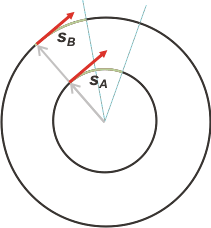

|
NO ME SALEN
PROBLEMAS RESUELTOS DE FÍSICA
(Movimiento circular uniforme)
|
|

|
 |
6.9 - Un móvil recorre la trayectoria A con
movimiento circular uniforme. Otro recorre la
trayectoria B, cuyo radio es el doble que el de A,
con la misma velocidad tangencial. Cuando el radio
del primero describió 400° el del segundo
describió:
a) 400° b) 800°
c) 100° d) 200°
e) ninguno de los anteriores |
|
No puede existir ejercicio más simple. Supongo que si no estás familiarizado con los parámetros del movimiento circular puede resultarte extraño, no familiar. Pero en cuanto te des cuenta de qué te están hablando, esta pregunta se responde sin hacer ninguna cuenta.
Por supuesto... acá las haremos. |
|
|
 |
Pero No me salen te obliga a ver las cosas... en el aire no se puede, capaz que te estás imaginando otra cosa...
Acá tenés las dos trayectorias de los móviles. Está hecho a escala, o sea, el radio de B es el doble del radio de A. Algebraicamente:
RB = 2 RA
Además, el enunciado dice que ambos se mueven con la misma velocidad tangencial:
vB = vA
|
|
|
|
Tal vez te preguntes cómo puede ser una cosa así. Mi respuesta es: ¿y por qué no? Qué te imaginaste, ¿un mecanismo de reloj?, ¿un disco con dos paquetes?, ¿dos caballos en una calesita? ¡Se trata de dos cuerpos libres e independientes! ¡Que se mueven como se mueven porque se le cantó al físico que armó este problema! ¡Y ya! |
|
|
|  |
Bueno, ahora mirá este otro esquema. Es el mismo de antes pero los móviles ya giraron un cierto rato, digamos 18 segundos (por decir uno cualquiera). Como iban a la misma velocidad, en un mismo intervalo de tiempo deberán recorrer un mismo arco, s. O sea:
sB = sA
Es cierto: el arco A está más curvado que el arco B. Pero la longitud de ambos debe ser la misma.
Ahora, si te fijás, el ángulo barrido por ambos móviles no es el mismo. |
|
|
|
El ángulo barrido por el móvil A es el doble del ángulo barrido por B. ¿Ya tenés tu respuesta? Vamos a la Física. La relación fundamental de los movimientos circulares dice:
ωA = vA / RA
ωB = vB / RB
Reescribamos la segunda usando las relaciones entre ambos móviles:
ωB = vA / 2 RA
ωB = ωA / 2
Recordando que ω= θ/Δt, y considerando que ambos giran durante el mismo Δt...
θB = θA / 2
En nuestro caso:
θB = 400° / 2
|
|
|
|
|
|
Bueno, aprendete esta regla de oro que inventaron los griegos, adoradores de la circunferencia: arco es igual a radio por ángulo.
s = R . θ
Con eso alcanzaba. |
|
|
DESAFIO: ¿Con qué frecuencia gira A si B lo hace a 300 Hz? |
|
 |
| Algunos derechos reservados (en criollo: no podés publicarlo a tu nombre, ¿entendiste? Mirá que tengo un boga repesado, ¿eh?).
Eso sí, se permite su reproducción citando la fuente, o sea, papá. Última actualización dic-13. Buenos Aires, Argentina. |
|
|
| |
|